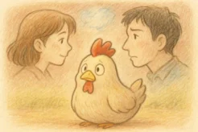

ニワトリは顔を見分ける？顔認識と知能の科学
鶏は「すぐ忘れる」「単純な動物」と思われがちですが、研究では生後まもない雛が顔らしい配置を好み、個別の顔を識別する能力を持つことが示されています。さらに2024年には、若い鶏の脳に顔刺激へ反応する神経細胞があることも報告されました。

- 鶏の雛が生後まもなく「顔らしい配置」を識別する実験結果
- 鶏が人間の顔の「美しさ・対称性」に反応する研究データ
- 話題の「250人の顔を覚える説」の真偽
- 鶏が顔認識能力を持つ進化的・社会的な理由
- この発見が動物福祉・農業・科学に与える意味
鶏の認知能力：動物界での位置づけ
| 認知能力 | 鶏 | 犬 | 豚 | 人間 |
|---|---|---|---|---|
| 顔の識別 | 確認済み | 確認済み | 研究中 | 高度 |
| 個体認識 | 群れ内で可能 | 高度 | 確認済み | 高度 |
| 美しさの認識 | 対称性に反応 | 不明 | 不明 | あり |
| 社会的学習 | 確認済み | 高度 | 確認済み | 高度 |
| 生後即座の学習 | 生後数時間 | 数週間後 | 数日後 | 数週間後 |
鶏の認知能力の特徴：鶏は生後わずか数時間で視覚的学習を開始する、動物界でも稀な「早成性」の認知能力を持ちます。これは刷り込み研究の観点からも重要な発見です。
第1章：ニワトリの「顔認識」はどこまで可能か
実験では、視覚刺激にほとんど触れたことのない新生雛が「顔らしい配置」を好み、最初に見た「ひとつの顔」をのちに識別できることが示されました。つまり、顔の構成を検出する初期メカニズムが生まれつき備わっている可能性があります。
顔らしさを検出する生得的メカニズム
2024年の最新発見：脳内の顔選択ニューロン
Kobylkov et al. (2024) の研究では、鶏の若い脳に「顔刺激に特異的に反応するニューロン」が存在することが確認されました。これは行動実験を超えて、脳の神経レベルで顔認識の仕組みが組み込まれていることを示す発見です。
第2章：人の顔だって大丈夫？鶏の人認識能力
鶏は人間の顔に対しても反応を示します。Ghirlanda et al. (2002) の研究では、人間の「平均顔」を基にした刺激に対する選好が観察され、人間の視覚的好みと似た傾向を示しました。
第3章：「250人の顔を覚える」説を検証する
ネット上でしばしば見られる「鶏は250人の顔を覚えられる」という話。この具体的な数字は、実際のところどれほど正確なのでしょうか。
「250人説」の学術的検証結果
SNSやまとめサイトでの誇張、農場での飼育経験談、そして「複数の顔を識別できる」という研究結果の過度な具体化が重なって広まった可能性があります。結論としては、「250人」という数字は誇張・口伝が拡大したものと考えるのが妥当です。
ただし、顔を見分けられる事実は変わりません。数字の正確性とは別に、鶏の認知能力が私たちの想像以上であることは確かです。
第4章：なぜ鶏は「顔」を見分けられるのか
鶏は群れで暮らし、仲間や飼育者との関係の中で生きる社会性を持つ動物です。個体を見分けることは、序列の把握や餌の分配、危険な相手の判別に直結します。
第5章：「鶏を見直す」発見が持つ意味
| 分野 | 発見が与える影響 | 具体的な変化 |
|---|---|---|
| 畜産・農業 | 個体識別能力の活用 | 同じ飼育者が関わることでストレス軽減につながる可能性 |
| 動物福祉 | 認知・感情を持つ存在として認識 | 飼育環境や扱い方の見直し |
| 認知科学 | 顔認識の収束進化の証拠 | 哺乳類以外で顔認識が発達した理由の解明 |
| 教育 | 動物の知性への理解促進 | 「鶏は単純」という固定観念の打破 |
| ペット飼育 | 鶏との関係構築の重要性 | 継続した世話で安心感が増す |
研究が明かした「5つの驚き」
Wood et al. (2015) の研究で、視覚刺激にほとんど触れたことのない新生雛が顔らしい配置をランダムな配置より好むことが確認されました。
Kobylkov et al. (2024) は、若い鶏の脳に顔刺激へ特異的に反応する神経細胞が存在することを報告しました。
Ghirlanda et al. (2002) では、鶏が平均顔や左右対称な顔を選好することが確認されました。
Rosa-Salva et al. (2010) は、新生雛にとって顔様刺激が特別であり、生後の視覚経験が記憶として固定される仕組みを示しました。
顔認識能力の存在は、鶏が人間を個体として区別している可能性を示します。同じ飼育者が継続して世話をすることは、ストレス軽減の科学的根拠になり得ます。
まとめ
次に鶏を見かけたとき、その小さな目があなたを見ている理由を考えてみてください。それは単なる反射ではなく、脳内の顔認識システムがあなたの顔を処理している瞬間かもしれません。
関連記事
参考文献
- Wood, S.M.W. et al. (2015). Face recognition in newly hatched chicks at the onset of vision.
- Kobylkov, D. et al. (2024). Innate face-selectivity in the brain of young domestic chicks.
- Rosa-Salva, O. et al. (2010). Faces are special for newly hatched chicks: evidence for inborn domain-specific mechanisms underlying spontaneous preferences for face-like stimuli.
- Ghirlanda, S., Jansson, L., Enquist, M. (2002). Chickens prefer beautiful humans.